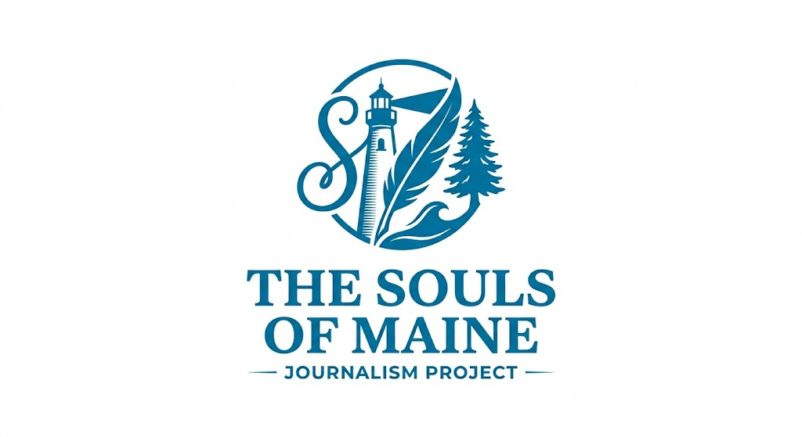

An examination of industrial revitalization, historic space conversion, and ancestral community devotion within the evolving landscape of Biddeford.
The Souls of Maine is an independent documentary project. We believe that everyone has a story worth telling, and that by listening, we find the common threads that bind our coastal communities together.
Have questions, ideas, or a story to share? Reach out through our channels below.